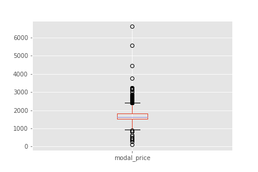
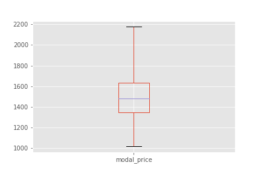

Data Present
Agricultural produce market committee(APMC) data is present of 352 types of Commodities and of 349 types of APMCs. Intial data present contins 64,249 rows and 11 columns namely:
- APMC - Agricultural produce market committee
- Commodity - Type of Commodity
- Arrivals_in_qtl - Arrivals in quintal
- Min_price - Minimum price per quintal
- Max_price - Maximum price per quintal
- Modal_price - Mode (Average) price charged per quintal
- Date - Date in format YYYY-MM
- District_name - Name of the District
- State_name - Maharashtra
- Year
- Month
Mandi data is present of 32 types of Commodities with their minumum support prices. It contains 155 rows and 5 columns:
- Commodity - Type of Commodity
- Type - Rabi , Kharif or Other Crops
- Arrivals_in_qtl - Arrivals in quintal
- Msprice - Minimum support price
- Msp_filter
- Year


Following Steps were carried out for preprocessing
- Checking for null or NAN values
- Converting commodity types to lowercase and removing any leading or trailing whitespaces
- Commodities having first n same characters were checked for any redundancy
- Modal prices were plotted to see it's characterstic in general
- Further boxplots were studied to identify outliers
Outlier detection and removal
- Rows where Minimum Prices was less than Modal Price and Max Price was greater than Modal Price were dropped
- Points lying above and below thresholds defined were eliminated too by dividing the dataset into it's yearly constituents
- Boxplots were plotted again to check that outliers have been removed
- Cleaning of Mandi Data was done in a similar way
A function is created which takes a value of APMC and Commodity which is part of non-stationary time series data
Following is an example of the output of the function
Raw price vs Deseasonalised price for Commodity Maize in APMC Malegaon
Method for finding highest fluctuations include finding the difference between minimum support price and detrended or deseasonalised prices but since not enough data in terms of minimum support price over the years is present, fluctuations in prices are found by simply carriying out differencing between maximum price per quintal and minmum price per quintal since this provides us with a better estimate.
Fluctuations are found out
- Yearly
- Seasonally depending on type of crop
5 dataframes were made which can be concatenated or used to flag set, distinguish and further study about the Commodity type and the Apmc
- highest_14 - Contains Apmc and Commodity combinations which have the highest fluctuations in prices in 2014
- highest_15 - Contains Apmc and Commodity combinations which have the highest fluctuations in prices in 2015
- highest_16 - Contains Apmc and Commodity combinations which have the highest fluctuations in prices in 2016
- rabi - Contains Commodities which belong to type Rabi
- kharif - Contains Commodities which belong to type Kharif
Following is a graph which contains the 4 Commodity Type and APMC which have shown highest fluctuations in prices for 3 years i.e 2014,2015,2016 consistently